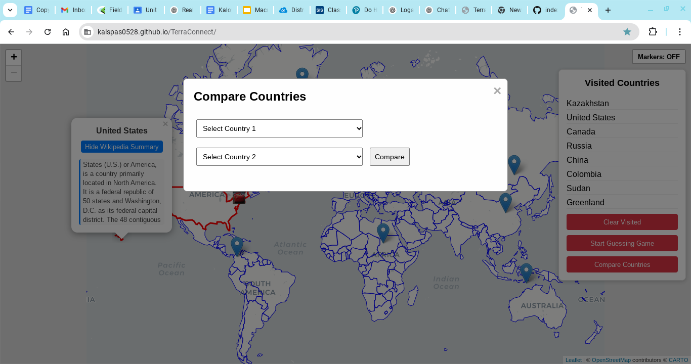

Current Project Details (click to expand)
Project Title & Description
TerraConnect: Global Interactive News Map
TerraConnect is an innovative platform that integrates an interactive world map with live news updates.
Designed to empower users with localized and global news at their fingertips, this project now includes
enhanced data visualization and performance improvements.
Research & Planning Documentation
Extensive research was conducted on mapping libraries such as Leaflet.js and various methods for live news integration—including News APIs, web scraping, and RSS feeds. Detailed planning documents and wireframes were created to ensure an optimal user flow and high performance.
Current Progress with Screenshots
View Progress Details (click to expand)

A new feature has been added to the platform—a "Compare Countries" button. This feature allows users to select two countries from a dropdown menu and view a side-by-side comparison of key details, including population, area, region, capital, and languages. The feature is powered by the Rest Countries API and offers a seamless comparison experience.
Updated Project Screenshot

Timeline & Milestones
- Week 1: Ideation and initial design sketches.
- Week 2: Research on mapping libraries and news integration options.
- Week 3: Development of the interactive map and Wikipedia integration.
- Week 4: Testing various methods for live news fetching.
- Week 5: Implementation of map markers and refinement of UI elements.
- Week 6: Addition of the Country Guessing Game and local storage functionality.
- Week 7: Integration of feature to compare Countries for quick country data comparisons.
Project Video Walkthrough
Your video walkthrough will appear here once uploaded.